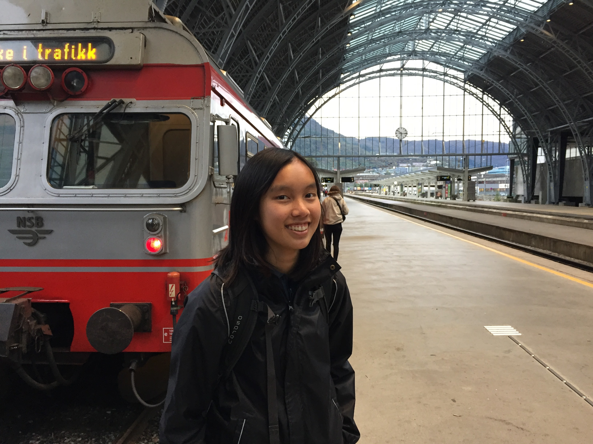

About
I'm a grad student and NSF fellow at the University of Washington. Generally I am interested in large scale astronomical surveys, especially with applications to studying stellar populations, and understanding the structure and evolution of the Milky Way.

Currently I work with
James Davenport (UW/DIRAC) and
Rory Barnes (UW) on studying the tidal evolution of binary stars using eclipsing binaries in K2/TESS.
As an undergrad at UC San Diego, I worked with
Adam Burgasser (UCSD) on constructing a
forward modeling pipeline for inferring atmospheric parameters of late-M/early-L dwarfs in the Apache Point Observatory Galactic Evolution Experiment (
APOGEE) survey.
Additionally I spent two summers at the
Max Planck Institute für Astronomie (in Heidelberg, Germany) with
David Hogg (NYU/MPIA/Flatiron) using data-driven approaches to modeling fundamental parameters of M dwarfs in APOGEE.
For more information, you can read my
CV.